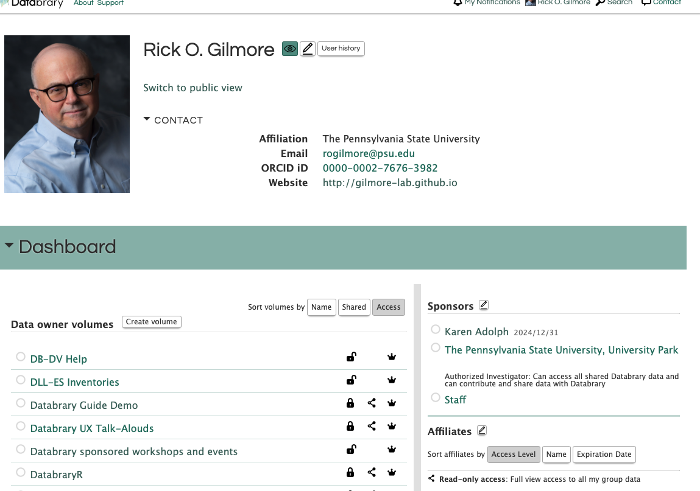
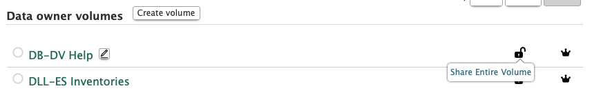
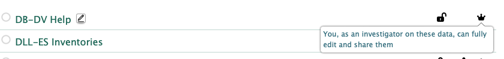
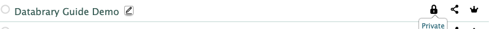
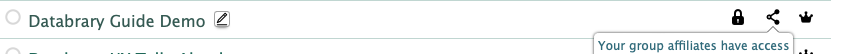
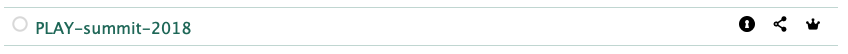
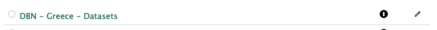
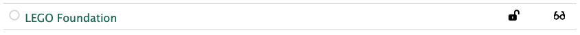
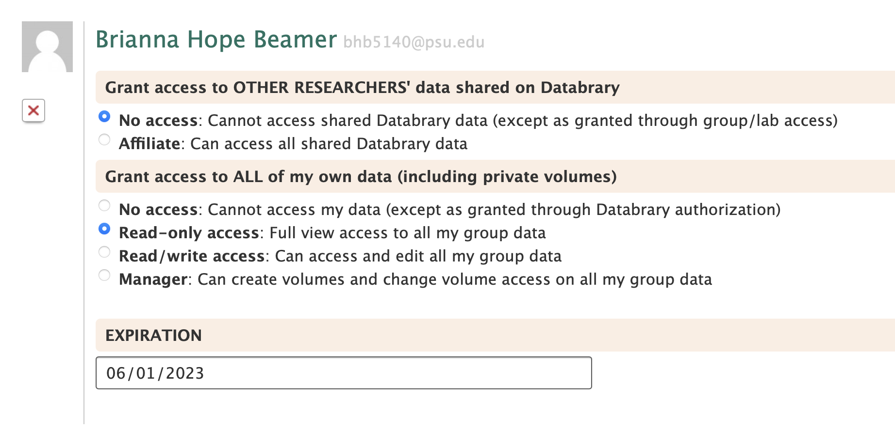

Software
This page describes some useful information about Databrary’s software.
Technology Stack
The Databrary application runs on a virtual machine running CentOS managed by NYU IT. Automatic transcoding of all uploaded video and audio files is handled by NYU’s High Performance Computing (HPC) cluster. Data is stored in Isilon arrays that are managed by the NYU Libraries.
Frontend
- AngularJS 1.4
- Coffee Script 1.7.1
- JQuery 1.12.3
- Stylus 0.54.5 + nib 1.1.2
Backend
- GHC 8.0.2
- Haskell 2010
- Solr 6.6
- PostgreSQL 9.5
- FFmpeg 4.2.4
Application
Datasets are organized into separate volumes with system-wide unique (integer) identifiers. Groups of data files related to a specific person or people (or non-human animal), a date, time, and location are grouped into sessions (slots) within a volume. Individual files (assets) of varying types are organized within a session (slot). Sessions (slots) and files (assets) are assigned system-wide unique (integer) identifiers.
Individual users and institutions (called parties) are assigned system-wide unique identifiers and have some overlapping data elements (e.g., prename, sortname). Access privileges are granted hierarchically in a parent/child organization. For example, Databrary is the parent of New York University (NYU); NYU is the parent of Karen Adolph and multiple other Authorized Investigators; Karen Adolph is the parent of multiple Affiliate investigators who have broad access to volumes Dr. Adolph has created. Further details about how Authorized Investigators assign access permission to Affiliates can be found in the System Roles section below.
Sharing Release Levels
Restricted data and metadata are controlled by a specific set of sharing release levels. These levels apply at the session/slot and file/asset level. Newly uploaded files default to Private. The terminology associated with these levels, the icons used to identify the levels, and the level of user access permitted by the levels are deeply embedded in the Databrary policy framework.
 : Unknown
: Unknown : Private
: Private : Shared
: Shared : Learning Audiences
: Learning Audiences : Public
: Public
API
All Databrary frontend calls use the API. The volume/slot/asset identifier scheme described previously supports API calls of the following form:
https://nyu.databrary.org/volume/1/slot/9807?asset=9200
This call accesses the Databrary “leaf” logo in volume 1, slot (session) 9807, with asset ID 9200. Similarly, https://nyu.databrary.org/party/12 returns information about all of the Authorized Investigators who are authorized through party 12, The Pennsylvania State University.
Most, but not all of the Databrary API is documented. If it is necessary to change the API calls in the rewrite, then the API should be versioned, and the new system should support current API calls.
Backend Services
All audio and video files uploaded automatically generate transcoding jobs that are handled by the NYU HPC.
The system mints a Digital Object Identifier (DOI) when a volume is shared. This must continue. Databrary piggybacks on the DOI account controlled by NYU Libraries.
The system generates and updates standard bibliographic citations for a volume based on volume data and metadata.
System roles
Super user
The system supports a small number of Super User accounts. Only an existing Super User can grant Super User privileges to another account holder. Super User have the following privileges:
- Editing user (party) account information
- Changing a user’s parent (sponsor) and child (affiliate) links
- Granting or removing system-wide access privileges
- Resetting user passwords
- Monitoring and managing the health of the system as a whole, including restarting stalled video transcoding jobs via an admin dashboard
- Generating email related to the process for requesting authorization from an institution for specific users
User
The system supports user accounts with the following features and privileges:
- Account creation
- Requesting authorization from an institution or individual (party)
- Editing user profile information (ORCID, web site, social media, additional email accounts, department)
- Two tiers of access: Authorized Investigators and Affiliates.1.
- Authorized Investigators are specifically linked to an authorizing institution (party) when the Super User establishes that link. Authorized Investigators can:
- Create, edit, share, and unshare volumes
- Create, edit, and delete sessions (slots) in volumes they own or co-own
- Upload, download, modify, and delete files (assets) in sessions in volumes they own or co-own
- Modify which other users (Authorized Investigators or Affiliates) have access to a volume, session (slot), or file (asset); this includes removing access.
- With regard to Affiliate, Authorized Investigators determine:
- The Affiliate’s level of access to all of Databrary (no access or full access to shared data)
- The Affiliate’s level of access to the Authorized Investigator’s data (no access; read-only access; read/write access; manager access)
- Modify the level (sharing release level) assigned to a session (slot) or file (asset)
- Affiliates privileges to access restricted data on Databrary are specifically linked to one or more Authorized Investigators. The Authorized Investigator controls that link. Links should expire on a regular (timed) basis. When linked to an Authorized Investigator, Affiliates have the level of access granted by that Authorized Investigator to i) Databrary as a whole (default is none) and ii) to specific volumes owned by the Authorized Investigator.
- Authorized Investigators are specifically linked to an authorizing institution (party) when the Super User establishes that link. Authorized Investigators can:
Volume Sharing Levels
- See more-information/definitions.
 : Private (to research collaborators):
: Private (to research collaborators): : Volume Overview
: Volume Overview : Entire Volume Shared (with the public)
: Entire Volume Shared (with the public)
An Authorized Investigator has a private page that combines personal profile information and a dashboard with information about volumes, sponsors, and affiliates.

The Dashboard consists of two columns. The left column provides information about Volumes the Authorized Investigator has created or has access to.
The following figure illustrates that the Volume has “Entire Volume Shared” status (unlocked lock icon; “Share Entire Volume” tooltip).
 Also, on this Volume, the user has “Investigator” status, meaning that the data can be fully edited and shared with others, as indicated by the tooltip and the crown icon):

Some volumes are Private (locked lock icon), accessible only to the researcher and specific Affiliates (network icon).


This user also has volumes with Volume Overview Shared as indicated by the keyhole icon:

Some other Authorized Investigators have also given this user read-write (pencil icon) status to their volumes that have Volume Overview Shared status:

And still other Authorized Investigators have given this user read-only (eyeglasses icon) privileges:

In this case, it looks like the volume has been fully shared (unlocked lock icon), so the user has full read access to the volume already. Prior to the volume being fully shared, the user had read-only access to the private data.
User Access Privileges to Volumes
 The Authorized Investigator determines what access an Affiliate has1. Other researcher’s (shared) data on Databrary and 2. the Authorized Investigator’s (shared and private) data.
Affiliate access expires after a user-defined date.
Affiliate access to other’s data
- No access (default)
- Affiliate
Affiliates will be replaced by new term: Sponsored Researchers in Databrary 2.0↩︎